Arduino Smart Car
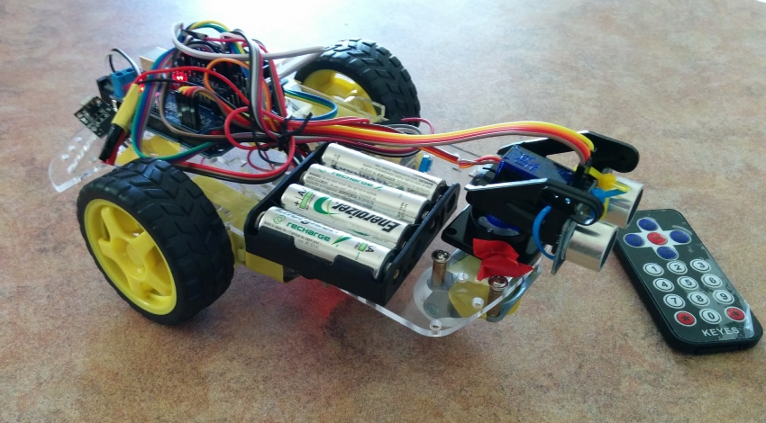
Measurements and deterministic decisions
For navigation, the smart car relies on an ultrasonic sensor that is mounted on a servo. Deterministic decisions are based on three measurements, a measurement of the front distance, and two measurements of the distance at 30∘; from the central measurement.
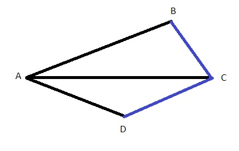
For a triangle, is you know three things about it, you can deduce all other information. From two distance measurements, we can form a triangle. In the figure, consider the triangle △ABC. The measurements of distance give us the length of the sides AB and AC. The difference between the servo angles at which the measurements are taken is 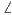BAC, and it gives us a third fact about the triangle. Knowing all this, we can complete the triangle △ABC and get an estimate of the angle 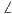ACB. This angle gives us information about the wall that is straight ahead. In more detail, to get an estimate of the angle 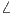ACB I first get the length of the side BC, denoted as |BC|, as follows:
Next, the same procedure is repeated with the triangle △ADC, to obtain the angle 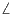ACD.
Once we get the angles  ACB and 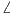ACD, we can decide where to go. In
general, you want to go in the direction of the larger angle. Additionally, if the
sum of the angles ACB and 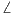ACD is less than 90∘, the smart car may be
located in a dead end, and you may want to take particular actions for this
case.
ACB and 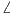ACD, we can decide where to go. In
general, you want to go in the direction of the larger angle. Additionally, if the
sum of the angles ACB and 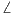ACD is less than 90∘, the smart car may be
located in a dead end, and you may want to take particular actions for this
case.
Random decisions
The car may get trapped in a cycle, to avoid the car gets stuck random decisions are used. For example, when the sum of the angles 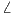ACB and ACD is less than 90∘, the car can go backwards for a random amount of time, and then decide at random to go either left or right.
Another case that needs to be handled, is when the car is stuck with an object
that is not detected by the ultrasonic sensor. To detect this scenario, the car
computes an estimate of its current speed. This estimate is computed using the
front distance. When the speed goes below a threshold, it may be a sign that the
car is stuck.
A demonstration of the algorithm is given in the following video